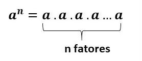

A Potenciação |
O Surgimento da PotenciaçãoA palavra “potência” foi utilizada pela primeira vez por Hipócrates de Quios (470−410 A.C.), num célebre livro em que reuniu, de modo lógico e organizado, a Geometria da época. Esse livro, considerado o primeiro em Geometria, foi precursor do livro Elementos, no qual dizem que o autor, Euclides, recolheu muitas informações importantes. Hipócrates designou o quadrado de um segmento pela palavra “dynamis”, que significa precisamente, potência. Mas foi com Arquimedes de Siracusa (287−212 a.C.), o maior matemático da Antiguidade e um dos maiores de todos os tempos, que as potenciações tiveram seus cálculos mais significativos. Arquimedes foi grande tanto na Matemática quanto na Física, e tinha grande habilidade na engenharia e na construção de sofisticados mecanismos. |
|
| Com o desenvolvimento da Matemática, principalmente pelo surgimento da álgebra, as potências foram cada vez mais utilizadas também com notações simbólicas nas variáveis das equações algébricas, introduzidas principalmente por François Viète (1540−1603). As notações modernas que temos sobre potência, tiveram grande contribuição com o matemático e filósofo René Descartes (1596−1650), com o livro “Géometrie” em 1637. |
Explicação: Como se calcula uma potência?A potenciação é uma operação matemática que representa a multiplicação sucessiva de um número por ele mesmo. Ao multiplicar o 3 por ele mesmo 4 vezes, isso pode ser representado pela potência 3 elevada a 4: 34 Essa operação possui propriedades importantes que facilitam o cálculo das potências. Assim como a multiplicação possui a divisão como operação inversa, a potenciação possui a radiciação como operação inversa. an= b Cada elemento da potenciação recebe um nome específico:
|
 |
Saber ler uma potência é uma tarefa importante. A leitura é sempre feita começando pelo número que está na base elevado ao número que está no expoente, como nos exemplos a seguir:
Ou seja...
Podemos dizer que potenciação representa uma multiplicação de fatores iguais, se temos a seguinte multiplicação: 2 x 2 x 2 x 2 x 2 x 2, podemos representá-la usando a potência 26, onde 2 é a base e 6 o expoente (Leia: dois elevado a sexta potência).
Além do mais, todo número diferente de zero e elevado a zero é um.
Confira como é organizada uma potência:
Pois:
a) 25 vezes 1 = ele mesmo
b) Todo número elevado a 0 = 1
c) -4.-4 = 16 (positivo)
Todos os direitos reservados aos websites, cujo foram utilizados como fonte de pesquisa para um melhor compreendimento do conteúdo.
Trabalho escolar: Projeto em HTML - Professor Mario da Silva Jesus
Etec Ermelinda Giannini Teixeira - Santana de Parnaíba, SP
Aluna: Eduarda Maciel Leite - Primeiro Ano do Ensino Médio, Técnico em Desenvolvimento de Sistemas